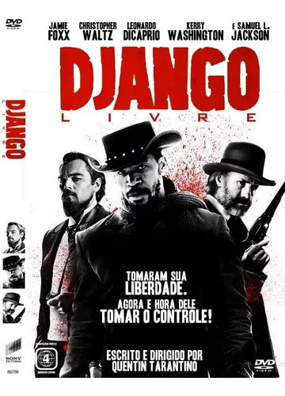

- Django livre
- +18
- Django é um escravo conhecido pelo histórico brutal com os seus ex-senhores. Isso o coloca diante do caçador de recompensas alemão,
dr. King Schultz, que está a procura dos sanguinários irmãos Brittle, e Django é o único que pode levá-lo à sua recompensa. Mesmo
com o objetivo alcançado, e a promessa cumprida, os dois permanecem juntos, caçando os criminosos mais perigosos dos EUA. Enquanto
isso, Django está a procura de sua esposa, levada pelo tráfico de escravos.
- Quentin Tarantino é um cineasta acima do bem e do mal. Um dos poucos “autores” de verdade no cinema hollywoodiano, possui uma fiel
legião de fãs sempre ávidos por cada novo trabalho anunciado. E com Django Livre, seu oitavo longa metragem, a situação não foi
diferente. Felizmente, a espera esteve à altura do recebido, pois esta é talvez a obra mais completa do realizador, com alta
relevância social, extremamente bem humorada, com um elenco afiadíssimo, um roteiro inteligente, diálogos muito inspirados e um
condutor em pleno domínio do seu exercício. Um prazer de raro deleite, que merecidamente foi reconhecido com cinco indicações ao
Oscar, inclusive à Melhor Filme.

- A espera de um milagre
- +14
-
Baseado em uma história de Stephen King, conheça Paul (Tom Hanks), chefe de guarda de um corredor da morte durante o ano de 1935.
Certo dia, chega em suas celas um prisioneiro imenso chamado John Coffey (Michael Duncan), acusado de estuprar e matar duas jovens meninas.
Um relacionamento entre os dois surge durante o conviver, revelando que Coffey parece ser muito mais do que as impressões sugerem.
- Este filme foi a prova definitiva do quanto Frank Darabont entende o universo de Stephen King, criando um mundo absolutamente
crível e corriqueiro (apesar da mórbida presença da morte), para então inserir o elemento fantástico, que apenas reforça a humanidade
de seus personagens. Á Espera De Um Milagre é um dos grandes dramas da década de 90, capaz de envolver os corações mais duros em pura
emoção, e cuja longa duração sequer é sentida. Uma obra que eu chamo de “Filme Completo”, por ser capaz de fazer chorar, rir, provocar
alguns arrepios (sim, me refiro à cena da esponja seca), e nos deixar com um nó na garganta. É curioso que apesar de Stephen King ser
considerado o Mestre do Terror, muitas das adaptações mais memoráveis de sua obra são justamente aquelas dedicadas às suas criações de
caráter mais dramático e intimista, como pode ser comprovado por esse maravilhoso filme de Frank Darabont.